Currently, the typical sidewalk garbage bin in the city of Toronto consists of three compartments: The waste, this is the
garbage that is sent straight to landfill. The organics, this section is processed to be used as compost
in parklands and gardens. And the recycling section, this is sent to the local Municipal Recovery Facility to be
sorted into sub-groups such as metal, plastic, and paper. The sorted materials are then shredded, and used to create
other object's of the same material.
The problem we found is that only 1/3 of recyclables actually get recycled. This is a $2 billion loss
for Canada and a $20 billion loss in the U.S. There are a few reasons for this. One of them is
food contamination, when oils and fats get soaked into the material it is no longer recyclable. The other reason is
that people just do not know where things are supposed to go. Often packages are unlabled or poorly labled. Figuring out
where it is supposed to go also takes time, and if one is in a hurry people will
often throw it into the garbage or the closest compartment.
Image of bin
The trash can uses a number of trash cans that the buyer asks for all connected and lined up. The trash cans are attached to servo motors, which are attached to a computer.
All that the person has to do is say what they’d like to throw out, after that, the computer uses voice recognition and banks this word into a folder, and the servo motor corresponding to that folder moves, which opens up the lid of the proper bin
When the waste is thrown into the bin, a fact about that piece of waste is displayed on the screen, this is meant to discourage people from producing too much waste.


The photos below capture the moment when the team came up with its Smart Sort Trash Bin idea, this was definatley our Eureka moment,
we were running out of time to the competition, and it was the first viable idea we had.
Ctrl-Z first went to IKEA to buy 5 small trash bins with hinges. Then we went to the Home Depot to buy foam insulation boards to create a container for the bin.
Some ideas we had were:
 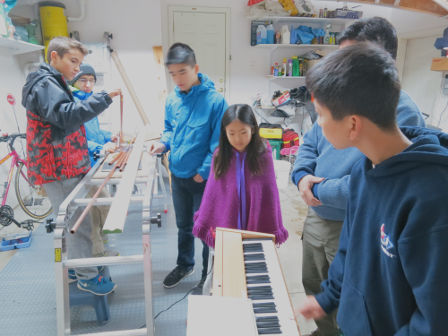
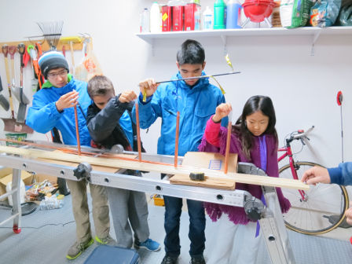
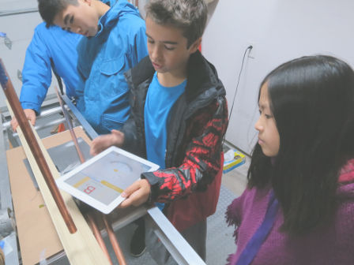
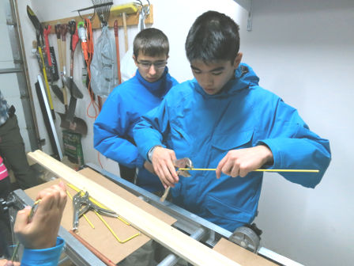
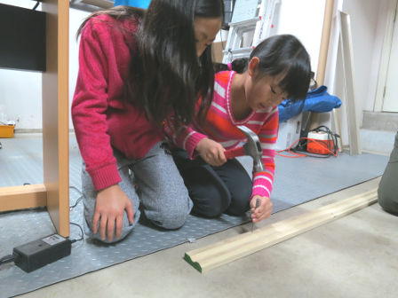
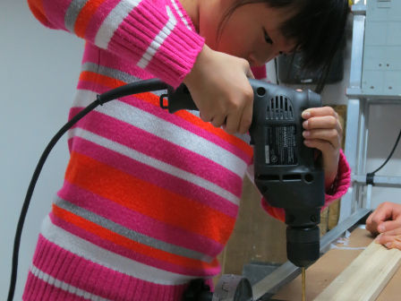
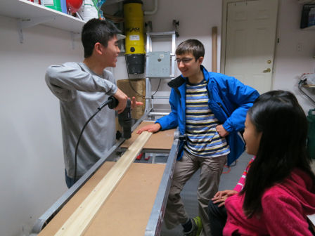
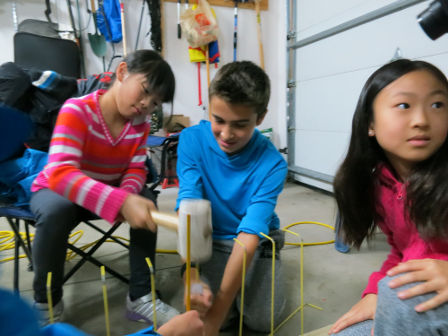
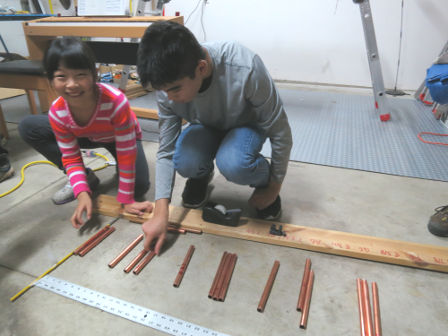
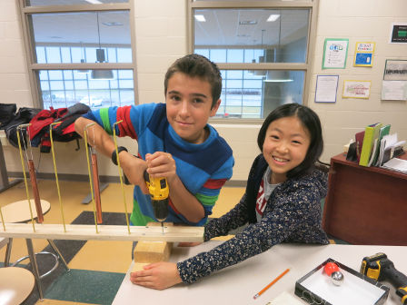
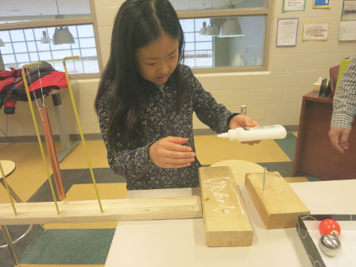
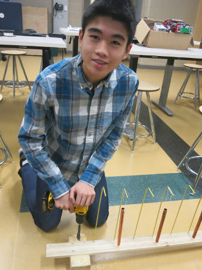
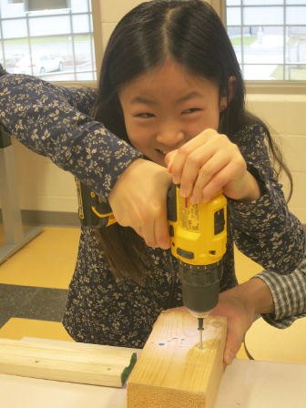
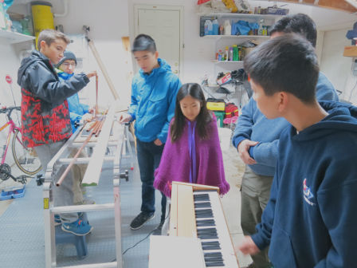
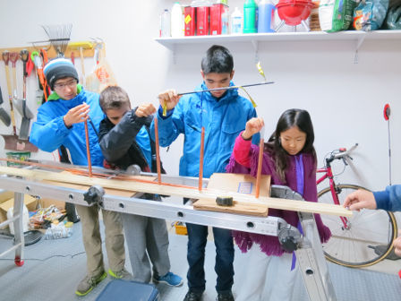
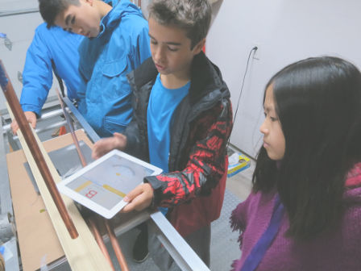
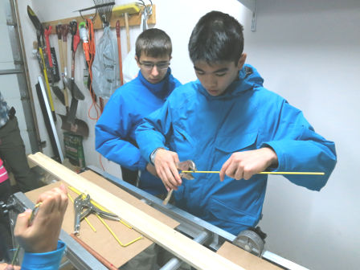
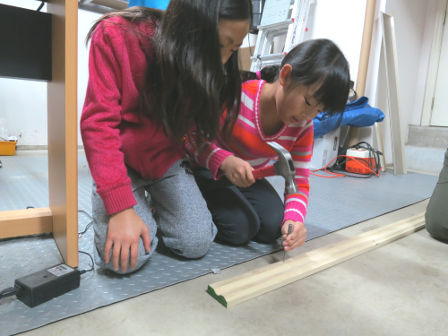
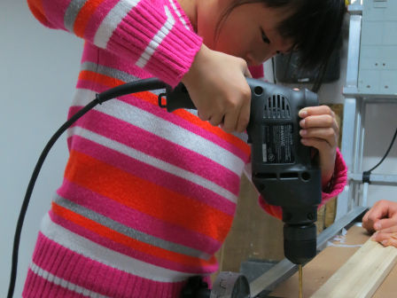
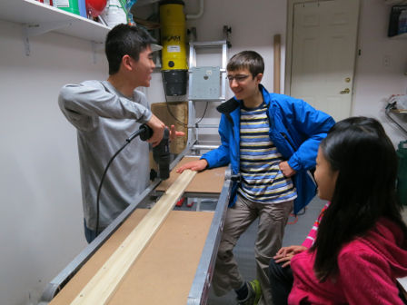
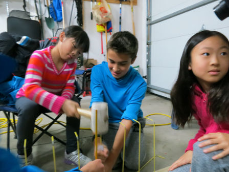
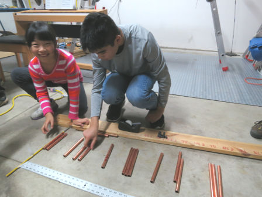
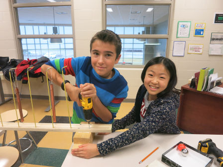
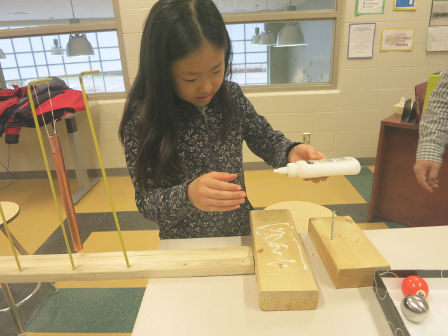
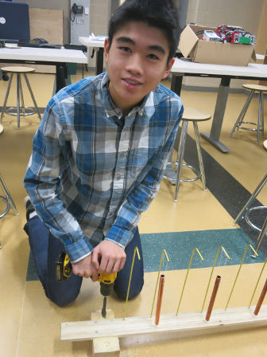
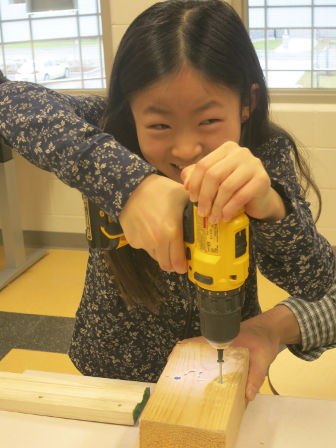
| Part | Price per Unit | Price per Ramp | Resource |
|---|---|---|---|
|
Insulation Foam |
$17.30/peice | $34.60/Bin | https://www.homedepot.ca/en/home/p.1000100179.html |
|
Arduino Boards |
$27.75/Board | $27.75/bin | https://www.creatroninc.com/product/arduino-uno-rev3/ |
|
wires (13 feet) |
$0.18/foot | $2.34/Bin | https://www.creatroninc.com/product/22awg-solid-wire/?search_query=wire&results=454 |
|
Servo Motors (5) |
$14/Servo | $70/bin/td> | https://www.creatroninc.com/product/analog-feedback-servo-motor-16kgcm/ |
| Netbook Laptop | $145.00/computer | $145.00/Bin | http://www.walmart.com/ip/Nextbook-Flexx-11-with-WiFi-11.6-Touchscreen-Tablet-PC-Featuring-Windows-8.1-Operating-System-Black/44503406 |
|
Trash Bins |
$5.00/unit | $30.00/RAMP | http://www.ikea.com/ca/en/catalog/products/20193899/#/40188340 | TOTAL: | $309.69/Bin |